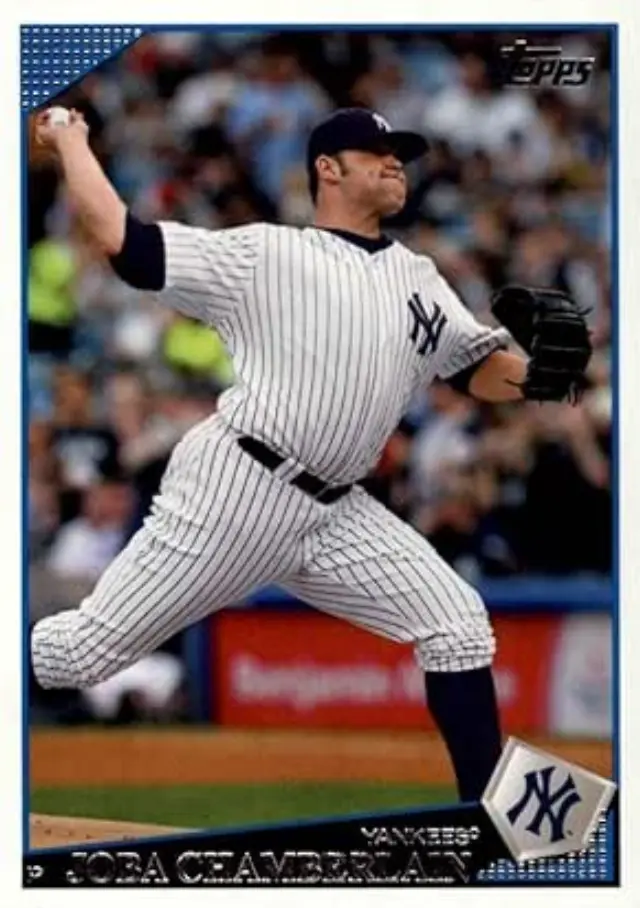

Joba Chamberlain "Joba"
Career Highlights & Facts
(Facts are AI-generated and may require verification)
- Became the subject of a unique set of pitching restrictions designed to protect a young arm during a meteoric rise.
- Experienced a bizarre postseason disruption caused by an infestation of insects on the mound.
- Maintained a close, lifelong bond with a father who overcame a childhood disability to raise a professional athlete.
Would you like to find out more about Joba Chamberlain?
Read Player Biography
Joba Chamberlain
January 4, 2012
/
in
BioProject - Person
Native Americans
Native American Major Leaguers
/
by
admin
This article was written by
Alan Raylesberg
The lasting image of Joba Chamberlain is that of him swatting midges away from his face on an unseasonably warm night in Cleveland in
Game Two of the 2007 American League Division Series
. Chamberlain had an electric start to his career and was so tremendous as a New York Yankees rookie that the team instituted the “Joba Rules” to try to maintain his effectiveness for the long haul. While Chamberlain pitched 10 seasons in the majors, his career was plagued by injuries, and he never recaptured the magic of his rookie season, when he excited the city of New York with his dominant fastball and a dramatic life story that took him from a tough childhood in Nebraska to pitching in the postseason at the age of 21.
Justin Louis “Joba” Chamberlain was born on September 23, 1985, in Lincoln, Nebraska. He was born Justin Louis Heath and ultimately took the surname of his father, Harlan Chamberlain. Joba’s parents were never married and split up when Joba was an infant.
1
His father raised him and his sister as a single parent. Born on the Winnebago Indian Reservation,
2
Harlan was stricken with polio as an infant and became permanently disabled as a result. When he was 9 months old, Harlan had to leave the reservation to live in a children’s hospital. He was there for over six years before growing up in a series of foster homes.
3
Despite needing a motorized scooter to move around, Harlan worked full time at a state penitentiary for 27 years while also working a second job as the manager of a local bar. He also managed to go to college and earn a degree in social work.
4
After retiring, Harlan worked as a substitute teacher and as a ticket taker at Nebraska Cornhuskers’ football games.
5
Chamberlain got his nickname when a 2-year-old cousin, whose brother’s name was Joshua, was unable to pronounce it correctly, pronouncing Joshua as Joba. Harlan liked the nickname and began calling his son by that name. The name stuck and Justin eventually changed his name legally to Joba.
6
Although Joba, his sister, and Harlan did not live in a “palatial house,” they “always had what [they] needed and there was always love in [the] house.”
7
As Joba recalled, “All we had was each other. And we never took that lightly. It’s not just father and son. We were best friends.”
8
It was Harlan who instilled in Joba a love of baseball. Father and son would play catch in their front yard, even though Harlan did not have use of his left arm. “He’d throw it left, right, short, long,” Joba recalled.
9
Joba wasn’t raised on the reservation “but he was raised knowing what his culture was and being proud of that,” Harlan recalled in 2007, adding that Joba “identifies and can function on the reservation.”
10
Chamberlain graduated from Lincoln Northeast High School, where he starred on the baseball team. He did not make the team until his junior year and was not in the starting rotation until his senior year.
11
He then earned second team “Super State” honors, going 2-2 with a 3.35 ERA with 29 strikeouts in 31⅓ innings.
12
After graduating from high school, and without a college scholarship, Chamberlain worked as a maintenance employee for the Parks Department in Lincoln. He played American Legion ball and the University of Nebraska-Kearney offered him a scholarship.
13
As a freshman he pitched and led the team in various categories before transferring to the University of Nebraska-Lincoln for his sophomore year. In Lincoln, Chamberlain was a member of the 2005 Cornhuskers team that went to the College World Series. His performance was “one of the most dominant pitching years in school history” and he was named the 2005 Big 12 Newcomer Pitcher of the Year, the first team All-Big 12, and a third-team All-American by
Collegiate Baseball
.
14
In 2006 he was named a first-team Preseason All-American by
Collegiate Baseball
and second-team Preseason All-American by the National College Baseball Writers’ Association as he pitched to a 6-5 record in 14 starts with a 3.93 ERA and a team-leading 102 strikeouts in 89⅓ innings.
15
Chamberlain was selected by the Yankees as a supplemental pick in the first round (41st overall) of the June 2006 amateur player draft.
16
He was the second-highest drafted Native American in baseball history.
17
He received a $1,150,000 bonus to sign with the Yankees and debuted, in 2006, with the West Oahu Cane Fires in the Hawaiian Winter League, where he had an ERA of 2.63 and ranked second in the league in strikeouts with 46 in 37⅔ innings.
Before the 2007 season,
Baseball America
ranked Chamberlain as the fourth-best prospect in the Yankees organization and 75th of all major-league prospects.
18
His first full season in professional baseball began in 2007 with the Tampa Yankees in the Class-A Florida State League. After excelling there (4-0, 2.03 ERA), he was promoted to Trenton in the Double-A Eastern League, where he continued to excel (4-2, 3.35) and was named to the United States team for the 2007 All-Star Futures game. Later that year, Chamberlain was promoted again, to Triple-A Scranton/Wilkes-Barre (1-0, 0.00), where he continued to dominate with a fastball that
Baseball America
ranked as the best in the Yankees farm system.
Although Chamberlain projected as a major-league starting pitcher, his meteoric rise through the Yankees organization in his first professional season resulted in the Yankees moving him to the Scranton/Wilkes-Barre bullpen in anticipation of a possible call-up to the big-league club. With the Yankees in the thick of a pennant race, the team did indeed bring Chamberlain up to the majors, in August.
19
He was 21 years old. On August 7 Chamberlain made his debut, in Toronto, against the Blue Jays. Pitching in relief, he pitched two scoreless innings, striking out two. He quickly became a fan favorite as the result of his youth, his meteoric rise through the system and an electric fastball. When he pitched, “he rocked [old
Yankee Stadium
] like few pitchers ever had.”
20
His father, disabled and in his motorized scooter, often attended his games and was frequently shown in the stands during local telecasts of the games. All of this added to the growing legend for the young right-hander.
Mindful of his youth and limited professional experience, the Yankees placed certain highly publicized restrictions on how often Chamberlain would be allowed to pitch. In what became known as the “Joba Rules,” Chamberlain was not allowed to pitch on consecutive days and was to be given an additional day of rest for each inning pitched when he did appear in a game.
21
As a dominant reliever, Chamberlain was an important part of the Yankees’ 2007 pennant chase. In 19 regular season games, Chamberlain allowed only 12 hits and one earned run in 24 innings for an ERA of 0.38 while striking out 34 batters. The Yankees were 17-2 in games in which he pitched, as he held opponents to a .145 batting average. His performance was nothing short of phenomenal.
22
The future as well as the present looked bright, and the fans were eating it up.
Adding to the excitement surrounding Chamberlain was the feel-good story about father and son. When the Yankees traveled to Kansas City in September 2007, Harlan was able to make the trip from Nebraska and was in the stands to watch his son pitch in the major leagues. It was an emotional night for father and son, as tears streamed down Harlan’s face. Harlan told the
New York Times,
“I’m just as proud as I can be for him to be a part of such a storied organization. … The thing that touches me the most, when he’s in the dugout, to think he can be with
Jeter
and
Cano
and all these people. This is where
Babe Ruth
played and
Joe DiMaggio
. I grew up on
Mantle
and
Maris
. My son is a part of that.”
23
Chamberlain had an opportunity to write his own chapter in Yankees history in the 2007 postseason. But the chapter had a bad ending. In Game Two of the ALDS in Cleveland, with the Yankees trailing in the series one game to none, Chamberlain was called upon for the biggest appearance of his young career. He was on the mound in the bottom of the eighth inning with the Yankees clinging to a 1-0 lead.
24
And that’s when the midges came out. The tiny flies were everywhere, including on his arms and neck, and Chamberlain was clearly bothered by them. The Yankees trainers sprayed him repeatedly with insect repellant, but the midges would not be stopped. Plainly bothered by the disruption, Chamberlain walked two batters, hit another, and threw two wild pitches, allowing the tying run to score. Despite not allowing a hit in the inning, Chamberlain had blown the save and the lead. The Indians went on to win the game 2-1 in 12 innings and to defeat the Yankees in four games.
25
Looking back on that game years later, longtime Yankees broadcaster John Sterling recalled it vividly, telling the
New York Post
that “
Joe [Torre
should have pulled his team off the field. They would never have touched Chamberlain. The Yankees would have won that game.”
26
Torre had a similar thought, telling the
Post
in 2017, “I second guessed myself for not pulling the team off the field. … I knew [Joba] couldn’t see. … Little did we know that the stuff Gino [Yankee trainer Gene Monahan] was spraying on Joba’s face was like chateaubriand for those bugs.”
27
When the 2008 season started, the excitement around Chamberlain continued. The Yankees announced he would begin the season in the bullpen and that the Joba Rules would no longer apply. Chamberlain started off well, not allowing a run in his first four relief appearances. On April 13 his father collapsed at home and was hospitalized. Chamberlain was placed on the bereavement list and left the team for a week to be with him. When he arrived at the hospital, his father’s first thoughts were about how much time Chamberlain was going to miss from the team. “Before he could talk he asked the doctor how long it was going to take and he pointed at me,” Joba said.
28
The relationship between father and son continued to captivate the New York fans as well as his teammates. When he returned to the team on April 19, he was hugged on the field by many of his teammates, with the
New York Post
noting that “many Yankees treat [Chamberlain] like a kid brother.”
29
Upon his return, Chamberlain picked up right where he left off, pitching another scoreless inning in relief in his first game back. His effective pitching continued through the end of May. In 20 relief appearances, Chamberlain had a 1-2 record and a 2.28 ERA. Enthralled by his electric stuff and in need of a starter, the Yankees transitioned Chamberlain to a new role. He made his first major-league start against Toronto on June 3 and walked four before being replaced in the third inning. He pitched well after that, including throwing seven shutout innings against the Red Sox on July 25 in a game the Yankees won 1-0. In 11 starts through July 30, Chamberlain was 3-1 and he had lowered his ERA for the season to 2.24.
Chamberlain’s 12th start, on August 4, was when the bubble began to burst. Pitching against Texas, he injured his shoulder and was placed on the 15-day disabled list with rotator-cuff tendinitis. Despite the Joba Rules and the care the Yankees took with him in his first full season, the worst had happened as Chamberlain sustained an arm injury at the age of 22. While he pitched five more seasons with the Yankees (through 2013) before ending his career in 2016 after short stints with Detroit, Kansas City, and Cleveland, Chamberlain never duplicated the effectiveness of his debut season or his first full season in 2008.
30
The saga of Joba Chamberlain took another negative hit during the 2008 offseason when he was arrested back home in Lincoln for driving under the influence. Writing in the
New York Times
, the week after his arrest and concerned what the charges meant for Chamberlain’s career and life, columnist Harvey Araton noted that “few athletes [took] a city the way Joba Chamberlain stormed New York in the late summer of 2007… a one- time phenomenon, the fantasy of a B-movie screenwriter with his broad shoulders, immediate swagger and pugnacious face that might have landed him the role of a young
Babe Ruth
.”
31
Chamberlain was sentenced to probation in April 2009. The sentencing judge told him in words that would prove prophetic: “You probably worked long and hard to get where you are today. … It takes about 10 seconds to wipe that all out.”
32
In the Yankees’ World Series championship season of 2009, an apparently healthy Chamberlain was mediocre as a full-time starter, pitching 157⅓ innings (31 starts) with a 4.75 ERA. When the postseason came around, the Yankees did not need Chamberlain to start and returned him to the bullpen. He made 10 appearances in the postseason, pitching 6⅓ innings, allowing only two runs. He made three one-inning appearances in the World Series against the Phillies, and was the winning pitcher in Game Four. The Yankees won the Series in six games and Chamberlain received a much-deserved World Series ring.
33
Believing that his ability to throw at maximum velocity for short stints was better suited for the bullpen, the Yankees made Chamberlain a reliever again in 2010. He was not able to duplicate the phenomenal start he had to his career. And the injuries began to multiply. Midway through the 2011 season, he injured his elbow, leading to
Tommy John
surgery. Before the 2012 season began, he seriously injured his ankle in the offseason when jumping on a trampoline with his young son. Recovering from both the elbow surgery and the ankle injury, Chamberlain did not return to the mound until August 2012. The injuries continued to mount as he was hit in the elbow by a broken bat in Game Four of the 2012 ALDS,
34
followed by a stint on the DL in early 2013 with an oblique strain. The 2013 season was his last with the Yankees and he became a free agent, signing with the Tigers. In 2014 Chamberlain pitched 63 innings for Detroit, all in relief, with a 3.57 ERA. He pitched briefly in 2015 for Detroit and two other teams before his major-league career came to an end during the 2016 season.
35
Joba Chamberlain burst on the baseball scene in 2007 like a bolt of lightning. Despite the Yankees’ efforts to protect his arm, the excitement of 2007 was not repeated in his career. Chamberlain always kept perspective about his career, remembering how his disabled father never complained and, by example, taught him “not to feel sorry for myself.”
36
Looking back in 2012, Chamberlain appreciated how few ballplayers make it to the major leagues, adding: “You come up and make a splash like [I did,] that’s what everybody’s going to remember, but that’s also the standard you’re going to be held to. I’ve had my ups and downs, my good, my bad and my awful. Now I just try to get better every day, just stay balanced, respect the game, but most of all respect myself.”
37
As his Yankees career was coming to an end in 2013, Chamberlain reflected in the same positive way: “Your time in this league is so short, but I’ll always be Joba the person and Joba the dad. This game has taught me a lot; it’s taught me patience and taught me to keep everything in perspective. … [A]t the end of the day you have to be accountable to yourself and your son and be an example to him.”
38
Chamberlain’s son, Karter, was born out of wedlock when Joba was a junior in college. Given the relationship Joba had with his own father, he wanted to be as good a father to his son as his dad had been to him. In 2014, after joining the Tigers, Chamberlain spoke with MLB reporter Jason Buck about what it was like to be a dad. “You don’t really realize it or understand it until you become a father yourself,” Chamberlain said. “I didn’t really like all the things that [my father] did when I was that age. Looking back, he was always just looking out for the best and making sure that I did everything that I could to be the person that he wanted me to be.”
39
Chamberlain found his father intimidating, partly from the fact that he worked in a prison for so long. His father’s “tough love” taught Joba how to do things the right way and made him appreciate what his father meant in his life. Despite his disability and his stressful job at the prison, Harlan always had time for his son and taught him not to make excuses. As Joba said about his father, “He drives, he walks. He just does it with crutches and a scooter. … It’s just different. That’s just the way he did it. I learned to do a lot of things with one hand, because that was the only way he knew how to teach me: Tie a tie one-handed, break an egg one-handed. I still can’t do a button one-handed. It still takes me forever. Your parents teach you ways that they know. For my father, that was the only way he knew.”
40
As Buck wrote, “It’s also helped make Joba Chamberlain who he is. He’s trying to do the same for his son.”
41
After retiring from baseball, Chamberlain was involved in various business ventures, including ownership of bars and restaurants.
42
In 2018 he opened a bar, aptly named Chamberlain’s, in his hometown of Lincoln.
43
The restaurant closed, and Chamberlain reportedly had financial problems. In 2020 he left an expensive house he had purchased in Lincoln and had some of his baseball memorabilia sold at auction.
44
From the time he retired, Chamberlain has been, and still was, as of December 2024, extensively involved with social and other media. He has appeared on television as a baseball analyst, including appearances on the MLB Network and MLB.com.
45
He does multiple podcasts, is frequently interviewed online and has a YouTube channel known as “Joba and the Mouth,” which he co-hosts.
46
As of 2025, Chamberlain maintained a very active presence on Twitter (now X) where he had more than 118,000 followers. He was listed with the All American Speakers Bureau and available as a keynote speaker and industry expert on sports.
47
In November 2024 Chamberlain was inducted into the Nebraska Baseball Hall of Fame. He acknowledged that it was an “honor and a privilege” to be inducted and he was especially proud “to share this [honor]with my son and my dad, those are the two that have built me into this game, and I’m just so grateful for that.”
48
The main focus of Chamberlain’s post-baseball life remained his son, Karter. His X page is titled “The official twitter of pitcher Joba Chamberlain and very proud father of my main man Karter.” Shortly after his retirement, in 2017, Chamberlain spoke about his son in a conversation with the
New York
Post
. At the time, Karter was 11 and Chamberlain remarked that “it’s time to be a dad” and spoke about how he now had time to watch his son play baseball, including in a tournament in Cooperstown.
49
Fast-forward five years to 2022, and Karter was a high-school sophomore, playing the first of his three seasons of varsity baseball. Playing shortstop and pitcher for Lincoln Southwest High School, Karter played on Sherman Field, the same field that his father had played on years earlier. The memories came flooding back on a Friday night in April, when Joba and his father, Harlan, sat in the stands to watch their son and grandson. “It was kind of a moment where I was taken back as a father, because my dad was watching his grandson and I was watching my son like he did with me,” Chamberlain said that night. “It was one of those moments where you just kind of stop and be thankful that as a family we’ve gotten to share some pretty cool moments on this field. Hopefully, Karter will give us many more of those.”
50
After graduating from high school in 2024, Karter in December 2024 was a freshman at Hutchinson Community College in Hutchinson, Kansas, where he was a member of the baseball team as a right-handed pitcher, just like his dad.
Summing up Chamberlain’s star-crossed career, sports columnist Mike Lupica wrote in the
New York Daily News
, “Before there was Jeremy Lin and Tim Tebow, there was … a kid with a colorful name and backstory and fastball” who made Yankee Stadium “go mad with excitement.” “Joba came at us with a rush with that name and Native American in him and … [his] father in a wheelchair, and even though it wasn’t all a happy story … it really was like some colorful character out of the past, as if [he] had walked out of some old baseball novel before he walked through those doors in the outfield.” The story started to unravel that night in Cleveland and things were never the same. Yet, as Lupica wrote, in 2012, “Even now, you can see Harlan Chamberlain, those pictures of him at the old Stadium watching his son pitch for the Yankees, the dad in his Yankees warmup jacket.”
51
Last revised: October 1, 2025
Sources
In addition to the sources cited in the Notes, the author relied on Baseball-Reference.com and
Baseball America.
The author thanks the National Baseball Hall of Fame Library for supplying some of the sources, as referenced in those instances where the source material may not otherwise be readily available.
Photo credit
Joba Chamberlain (Courtesy of Aspenphotos Dreamstime)
Notes
1
His mother, Jackie Standley, began abusing drugs when Chamberlain was a child, and they are largely estranged. Museum of Nebraska Major League Baseball,
http://www.nebraskabaseballmuseum.com/spotlight3.html
.
2
The Winnebago Reservation is in Thurston County, Nebraska, in the northeast corner of the state about 90 miles from Omaha.
3
Kevin Kernan, “Joba the Hot,”
New York Post
, June 24, 2007,
https://nypost.com/2007/06/24/joba-the-hot/
; Barbara Barker, “Road to Yankees Wasn’t the Norm for Joba,” Newsday.com, August 6, 2007,
http://www.newsday.com/sports/baseball/Yankees/ny-spjoba0817,0,4431401.story
(National Baseball Hall of Fame Library, player file for Joba Chamberlain).
4
Barker.
5
Museum of Nebraska Major League Baseball. Harlan Chamberlain died on March 2, 2025 at the age of 73. Alyssa Johnson, “Harlan Chamberlain, Father and Supporter of Ex-Husker Joba, Dies at 73,”
Lincoln Journal-Star,
March 22, 2025,
https://journalstar.com/sports/huskers/baseball/article_5dbe5ff8-f8f3-4c61-886d-d5e3d60bc6ae.html
.
6
Museum of Nebraska Major League Baseball.
7
Barker.
8
Barker.
9
Barker.
10
Kernan.
11
Chamberlain was overweight in high school (5-feet-8, 230 pounds as a freshman) before losing weight and standing 6-3, 225 pounds when he entered college. Barker.
12
Huskers.com, Joba Chamberlain,
https://huskers.com/sports/baseball/roster/player/joba-chamberlain
.
13
Huskers.com; Barker.
14
Huskers.com. He was 10-2 with a 2.81 ERA and second in the Big 12 with 130 strikeouts.
15
Huskers.com.
16
The Yankees obtained the pick as compensation for the loss of Tom Gordon as a free agent.
17
Jacoby Ellsbury
was the highest drafted Native American, selected in the first round (23rd overall) by the Boston Red Sox in the 2005 Draft. See Baseball Almanac for a list of Native American Major League Baseball Players,
https://www.baseball-almanac.com/legendary/american_indian_baseball_players.shtml
.
18
The Yankees had another pitching prospect,
Phil Hughes
, who was more highly regarded and better known than Chamberlain. Hughes was the Yankees’ number-one prospect and fourth among all major-league prospects, according to
Baseball America.
19
After going to the World Series six times in eight years, from 1996 to 2003, the Yankees were trying to get back there. Having won the AL East for nine straight seasons, the Yankees found themselves trailing the Boston Red Sox throughout the 2007 season. While trying to catch the Red Sox, the Yankees were also trying to take what was then the one and only AL wild-card spot. In the end, the 2007 Yankees finished second and made the playoffs as the wild card.
20
Mike Lupica, “Joba Chamberlain, Who Was Once Thought to Be the Next Mariano Rivera, Is Yankees’ Fallen Star,”
New York Daily News
, March 24, 2012.
21
Tyler Kepner, “The Joba Rules,”
New York Times
, August 19, 2007,
https:
.
22
Chamberlain retired 16 of 19 first batters he faced. He struck out an average of 12.75 per 9 innings pitched and pitched more than one inning in 8 of his 19 appearances. He did not allow a run in his first 15⅓ innings. According to the Elias Sports Bureau, it was the second-longest scoreless-inning streak for any pitcher in Yankees history to begin his major-league career. MLB.com, Joba Chamberlain,
https://www.mlb.com/player/joba-chamberlain-501955
.
23
Pat Borzi, ‘Chamberlain’s Effort Brings His Father to Tears,”
New York Times
, September 8, 2007,
https://www.nytimes..html?_r=1&ref=sports&oref=login
.
24
Chamberlain had entered the game in the bottom of the seventh and struck out two batters with two men on to preserve the Yankees’ lead.
25
Joseph Wancho, “October 5, 2007: Midges Invade Jacobs Field, Attack Yankees’ Joba Chamberlain in ALDS,”
SABR Games Project,
https:
.
26
Steve Serby, “John Sterling Opens Up to Post about Yankees Career, Retirement Plans,”
New York Post
, April 20, 2024,
https:#:~:text=A:%20Oh%20my%20God.%20Joe%20should%20have,the%20Yankees%20would%20have%20won%20that%20game
.
27
George A. King III, “Stunning Rise and Stunning Fall of Joba Chamberlain, a Major Torre Regret,”
New York Post
, August 5, 2017,
https:
.
28
George King, “He’s Back On the Joba,”
New York Post
, April 20, 2008,
https://nypost.com/2008/04/20/hes-back-on-the-joba/
.
29
King. The tests done on Chamberlain’s father showed that he had respiratory issues and would need a machine at night to breathe. Joba remarked, “Hopefully he isn’t too stubborn to use it.”
30
Chamberlain returned to the mound, in 2008 after his stint on the DL. His 2008 season was a good one. In 42 appearances (12 starts), he had a 2.60 ERA with 118 strikeouts in 100⅓ innings. The 2008 Yankees missed the postseason, ending a streak of 13 straight years in the playoffs.
31
Harvey Araton, “Five Years Later, Yankees’ Chamberlain Hopes to Write Another Feel-Good Story,”
New York Times
, March 14, 2012,
https:
.
32
Associated Press, “Chamberlain Gets Probation for DUI,” April 1, 2009.
https://www.espn.com/mlb/news/story?id=4032927
. Chamberlain said in a statement, “I made a mistake and hope over time to turn this into a positive learning experience for me and others.”
33
He received a second World Series ring in 2015 as a member of the World Series champion Kansas City Royals, even though he did not pitch in the postseason.
34
In a game that lasted 13 innings, Chamberlain was the fifth of eight pitchers used by the Yankees, pitching the 11th inning and facing one batter in the 12th. That batter,
Matt Wieters
, broke his bat and the shard hit Chamberlain on the elbow, forcing him to leave the game. The Yankees lost the game, 2-1, but went on to win the Series, three games to two. The Yankees were swept in four games by the Tigers in the ALCS.
35
As a free agent after the 2014 season, Chamberlain signed once again with the Tigers for 2015. He was released in July and signed first with Toronto and then with Kansas City. He did not play for Toronto and finished the 2015 season playing for Detroit and Kansas City, with an ERA of 4.88 in 27⅔ innings pitched. A free agent again after the 2015 season, Chamberlain signed with Cleveland. He pitched 20 innings for the 2016 Indians, with a 2.25 ERA, before being released in July. That was the end of his major-league career. Chamberlain attempted a comeback in 2017, signing with the Milwaukee Brewers, but was released in spring training.
36
Araton.
37
Araton.
38
David Waldstein, “Losing Support, Chamberlain Keeps Composure,”
New York Times
, September 6, 2013.
39
Jason Buck, “Joba Trying to Be the Father His Dad Was,” MLB.com, June 12, 2014,
https:
.
40
Buck.
41
Buck.
42
In 2013, his final year with the Yankees, Chamberlain got involved with a group that owned American Whiskey, a restaurant in New York City. The restaurant was still operating as of December 2024. George King, “Joba Chamberlain Sounds Content as He Quietly Quits Baseball,”
New York Post
, October 4, 2017,
https:
.
43
Chamberlain’s 2008 DUI conviction, as well as a second DUI case that occurred in Lincoln in 2018, proved to be an obstacle in his efforts to open the restaurant. Post Wire Report, “Joba Chamberlain’s Two Duis Are Haunting Him,”
New York Post
, August 8, 2018,
https://nypost.com/2018/08/08/joba-chamberlains-two-duis-are-haunting-him/
. Chamberlain was nevertheless able to obtain a state liquor license, on the condition that he not have any more alcohol-related violations for a year. “Chamberlain’s Bar Up and Running,” 1011 NOW, October 22, 2018,
https:
.
44
Jake Elman, “Ex-Yankees Phenom Joba Chamberlain Earned $13 Million in the Majors but Lost Everything,”
Sportscasting,
August 10, 2020,
https:
; Peter Salter, “Joba Chamberlain’s Belongings, Baseball History to Be Auctioned Saturday,”
Lincoln Journal-Star
, August 7, 2020,
https:_459e1349-95a8-5b14-a481- e6ada6384e9e.html
; (National Baseball Hall of Fame Library, player file). According to the reports, Chamberlain kept his 2009 World Series ring.
45
Elman, “Whatever Happened to Yankee Phenom Joba Chamberlain,”
Sportscasting,
March 27, 2020,
https:
. In 2018 Chamberlain provided commentary for a short MLB.com video about the “midge game,” “31 Days of October: Chamberlain,” MLB.com, October 5, 2018, .
https://www.mlb.com/video/31-days-of-october-chamberlain-c2513531583#:~:text=Joba%20Chamberlain%20recalls%20his%20bout%20with%20the%20midges%20%7C%2010/05/2018%20%7C%20MLB.com
46
Joba and the Mouth
is an award-winning show on the World Wide Sports Radio Network (
https://kkloiber7.podbean.com/
). Chamberlain has also co-hosted
The Triple Play Podcast
on Hurrdat Sports (
https:
) and has appeared on, among others,
Yanks Go Yard
(
https://yanksgoyard.com/podcast/
) and “Catching Up With Joba Chamberlain” (
https://www.youtube.com/watch?v=6md8Dc7jdgc
).
47
All American Speakers Bureau, Joba Chamberlain,
https://www.allamericanspeakers.com/speakers/431780/Joba-Chamberlain
.
48
Jake Bartecki, “Joba Chamberlain Inducted into Nebraska Baseball Hall of Fame,” News Channel Nebraska, November 18, 2024,
https:
. Chamberlain’s father and son were in attendance to share the honor with him.
49
King, “Joba Chamberlain Sounds Content as He Quietly Quits Baseball.”
50
Luke Mullin, “From Yankee Stadium to Sherman Field, Baseball Shapes Father-Son Connection for Joba and Karter Chamberlain,”
Husker Extra,
April 23, 2022,
https:_2927942e-75a5-52e3-9785-e55cc9d00f2b.html
; (National Baseball Hall of Fame Library, player file).
51
Mike Lupica, “Joba Chamberlain, Who Was Once Thought to Be the Next Mariano Rivera, Is Yankees’ Fallen Star.”
Full Name
Justin Louis Chamberlain
Born
September 23, 1985 at Lincoln, NE (USA)
Stats
Baseball Reference
Retrosheet
Tags
Native Americans
·
Native American Major Leaguers
Career Totals
| WAR | W | L | ERA | G | GS | SV | IP | SO | WHIP |
|---|---|---|---|---|---|---|---|---|---|
| 7.6 | 25 | 21 | 3.81 | 385 | 43 | 7 | 555.1 | 546 | 1.379 |
Statistics via Baseball-Reference.com
The Original Clue